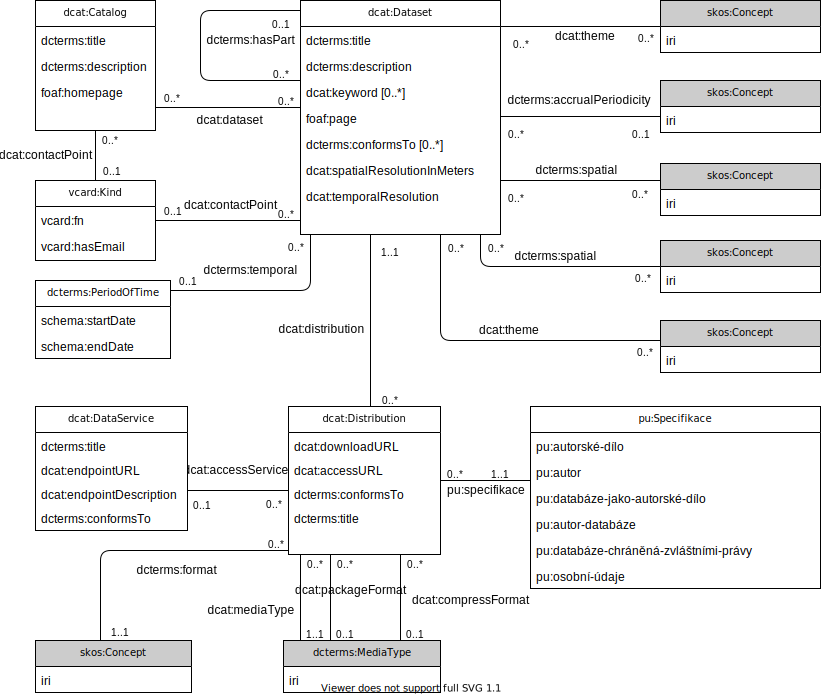

-
What
-
In this homework, you will create data samples and queries using graph data models and query languages.
-
Fix the conceputal model from the previous homework based on the tutor's notes.
-
For representation of data in RDF, you will need to cover the conceptual model with classes and properties either from existing vocabularies where appropriate, or by defining new ones using RDF Schema.
For the newly defined classes and properties use the
@prefix ex: <http://example.org/vocabulary/> . prefix and attach a human readable label and definition to each one of them.
-
Example of a conceptual model:
-
Example of a covered model:

-
Represent the data in RDF using RDF Turtle.
Each RDF resource will have a type.
-
Load the RDF data into a triplestore such as Apache Jena Fuseki or Openlink Virtuoso Open-Source (or both).
There is a triplestore quick-start slide deck prepared.
Openlink Virtuoso also allows you to browse the data in their Faceted search plugin.
-
Using SPARQL, develop a few meaningful executable queries on top of your data, including a comment explaining what each query does.
-
For representation of data in LPG, create a visualization of a data sample like the one in the lecture.
Try to utilize the possibility of edges having properties.
Each node and relationship will have a label representing its type.
-
Represent the data in LPG using an executable Cypher script (see the Movies example in tutorials).
-
Load the LPG data into Neo4j.
-
Using Cypher, develop a few meaningful queries on top of your data, including a comment explaining what each query does.
-
Quantitative requirements
-
-
At least 3 instances of each class.
In case of inheritance hierarchies, one of each children is enough.
-
Every attribute used at least once.
-
At least 3 instances of each association.
-
At least 4 non-trivial SPARQL queries
-
At least 4 non-trivial Cypher queries
-
How
-
-
Replace the HW1 file with a fixed one in the HW1 column.
-
To the HW2 column, upload a zipped file named
NPRG036-HW2-<groupID>.zip, e.g. NPRG036-HW2-T1G4.zip.
-
Zip file will contain folder
2, containing:
-
Folder
rdf containing:
-
Folder
model containing:
-
File
covered.svg with the conceptual model covered by RDF vocabularies
-
Folder
data containing:
-
File
data.ttl with data in valid RDF Turtle
-
Folder
queries containing:
-
Files
query-<number>.sparql, such as query-1.sparql with an executable query and comment
-
Folder
lpg containing:
-
Folder
model containing:
-
File
example.svg with the example of the LPG structure
-
Folder
data containing:
-
File
data.cypher with data in Cypher script, loadable to Neo4j
-
Folder
queries containing:
-
Files
query-<number>.cypher, such as query-1.cypher with an executable query and comment
Frequently Asked Questions (FAQ)
- What is a trivial query?
-
Listing of entities of a certain type, optionally filtered by a certain value.
-
Counting of entities of a certain type, optionally filtered by a certain value.
Common errors
- Using classes in place of predicates
-
Classes cannot be, in general, used as RDF predicates.
This means that in the covered UML class diagram, you should not use classes as associaton names.
Typically, this is an error, which can be easily spotted.
Classes typically start with an upper-case letter after prefix, e.g.
foaf:Person.
- Using predicates in place of classes
-
Predicates cannot be, in general, used as a class.
This means that in the covered UML class diagram, you should not use predicates as UML class names.
Typically, this is an error, which can be easily spotted.
Predicates typically start with a lower-case letter after prefix, e.g.
foaf:name.
- Missing language tags or data types in RDF
-
Texts in literals, which are in a natural language, needs to have this language identified using a language tag, e.g.
@en or @cs.
If a literal does not have a language tag, it needs to have a data type, typically from the xsd: namespace, e.g. xsd:dateTime.
- Wrong date syntax in LPG
-
Also in LPG the syntax for dates is the same as in
xsd:date, i.e. YYYY-MM-DD.
- Mistakes in RDF Turtle prefixes
-
When creating a RDFS vocabulary, you define
rdfs:Class and rdf:Property instances.
- Multiple
rdfs:domain or rdfs:range
-
When you say that your property (instance of
rdf:Property) has multiple domains or ranges, you are saying that an RDF resource, which will be in the subject (domain) or object (range) position of a triple with this predicate, are instances of all the classes specified as rdfs:domain or rdfs:range.
This is often wrong, as it is often meant as a way of saying that a domain or range includes multiple classes, which is not what it says.
- Using schema.org datatypes
-
Using Schema.org datatypes such as
schema:Boolean is not recommended.
It means that in RDF, all literals are strings, and they are then interpreted as booleans by a schema.org aware parser, which is often not desirable.
RDF has built-in support for xsd: based datatypes, which should be used primarily.